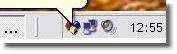
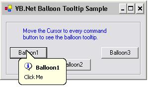

|


|
Great professionalism and care with the clients. Fantastic support with No Auto Responders.
CprinGold delivers very professional software. No more deal with API for manage system tray. Really recommended
Nanni
www.eurovideosystem.com
|
|
An excellent product that works well under all OS's with fantastic support and upgrades.
If you want to add system tray support, forget the Win SDK, just make it easy on yourself
and you'll be up and running in just a couple of minutes.
Jeff Lorenzini
www.stratacare.com
|
|
I just wanted a simple, uncomplicated way to handle system tray chores.
After trying several other free and commercial solutions, I found your ASTC
control. It does exactly what I need at a very reasonable price. Thank you
for that. Thank you also for the quick, complete, polite reply to my
support questions. It's a pleasure to do business with you.
Bret Reece
www.custodytoolbox.com
|
|
When we needed to add System Tray support to TimeTo for Windows we turned to the expert: CprinGold Software. We weren't disappointed: amazing product, amazing support.
David Berman
www.davidberman.com
|
|
Your tool has been
clean and very helpful
to us.
Glen Graham
www.tabsautobiz.com
|
|
Your control is in a product for the building automation industry called Web Smart Air, in the telephone interface which must run 24/7. Your control is very well thought-out and feature rich
John Matter
|
|
What is the system tray or systray?
The system tray is a section located at one end of the taskbar in Windows 95,
98, Millennium, 2000, and XP. It is used to display the clock as well as the
icons for certain programs.
 |
What is the ASTC 1.50 Type?
ActiveX control. |
What is the Compatibility of ASTC 1.50 with .Net?
100% .NET Compatible. |
What are the languages included in the sample code?
VB 6.0, VC++ 6.0, VB.NET, VC#.NET, VJ#.NET
|
What is the
subclassing?
Technique that allows you
to handle any Windows message that your window may
receive. |
|
 |
 |
 |
|
Overview of ASTC v1.50
ASTC
was designed specifically for
developers who wish to display icons in the system tray. It
includes the ability to creates a custom animated icon in your task bar,
you can also shows balloon tool tips in the systray, you can also subclass
any window to process the unavailable messages from Visual Basic, and at
last you can manage all system tray icons from your
application.
ASTC is
four ActiveX controls in one Control
- Tray icon ActiveX Control enables you to place your application in
the system tray, creates a custom animated icon in your task bar,
shows balloon tool tips in systray and more...
- Tray List ActiveX
Control enables you to manage all system tray icons from your
application; you can also hide any icon from system tray area.
- SubClass ActiveX
Control enables you to subclass any window to process the
unavailable messages from Visual Basic. Subclassing is a powerful
technique that allows you to modify the normal behavior of the controls
and forms in your application. Visual Basic makes some, but not the
entire messages available through the event system. The subclass ActiveX
control enables you to process all the hidden messages which are
actually very useful.
- Balloon ActiveX Control enables you to
add a professional popup balloons to your application in seconds. Works with
Win 98 and up

What are the
Benefits of using ASTC?
- Save your development time and costs.
- ASTC gives you more focus in the main
idea of your application.
- It is not necessary to know API to code all the
cool features that ASTC
offer for you.
- You will not worry about how to code these
features in the .Net, hence it will give you more focus in how to learn
and use the .Net itself.
- You can add more features to your applications using the subclass [without crashes and debug safe].
- The ASTC 1.50 installer package contains samples
code of using the four controls in the following languages Vb6.0,
VC++6.0, VB.Net, VC#.NET and VJ#.NET.
- FREE version-upgrades, bug-fixes and online support for registered
users.
In fact, once you start using ASTC, you will
discover hundreds of ASTC Benefits.
What is the
Possible Uses of ASTC?
- If you need to add your application icon
to system tray area in seconds.
- If you want to process the unavailable messages
through visual- basic.
- If you want to manage any of the systray icons from your application.
- If you want to assign a customizable balloon
tool tip for your application's controls.
- If you want to add more features to your
application using the subclass technique and in the same time with a debug safe.
- If you want to avoid using SetWindowLong,
Shell_NotifyIcon API functions that may disturb you.
- and more ...
Full feature
list |


|